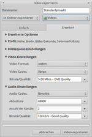

OpenShot
Dieser Artikel wurde für die folgenden Ubuntu-Versionen getestet:
Ubuntu 16.04 Xenial Xerus
Ubuntu 14.04 Trusty Tahr
Zum Verständnis dieses Artikels sind folgende Seiten hilfreich:
OpenShot  ist ein freier, nicht-linearer, sehr stabiler Video-Editor, aufbauend auf Python, GTK und dem MLT-Framework (Media Lovin' Toolkit). Die Hauptziele des Projekts sind eine einfache Benutzeroberfläche und ein möglichst reibungsloser Workflow. Es können einzelne Clips importiert und auf der Zeitleiste zu einem Video zusammen geschnitten werden, mit Übergängen zwischen den Clips. Außerdem gibt es zahlreiche Video-Effekte, es lassen sich Texte einfügen.
ist ein freier, nicht-linearer, sehr stabiler Video-Editor, aufbauend auf Python, GTK und dem MLT-Framework (Media Lovin' Toolkit). Die Hauptziele des Projekts sind eine einfache Benutzeroberfläche und ein möglichst reibungsloser Workflow. Es können einzelne Clips importiert und auf der Zeitleiste zu einem Video zusammen geschnitten werden, mit Übergängen zwischen den Clips. Außerdem gibt es zahlreiche Video-Effekte, es lassen sich Texte einfügen.
Zu den Funktionen von OpenShot gehören:
Übergänge zwischen Clips
Effekte (z.B. 3D-Globus-Animationen
, LensFlare , Chroma-Key-Effekt )Hinzufügen von Titeln mit vorgefertigten Designs
Rendering von 3D-Text
mit Spezialeffekten und Transparenz (Blender >2.56)Echtzeit-Vorschau
nummerierte Bilder in eine Diaschau umwandeln
mehrere Audio/Video Spuren
Drag 'n Drop Unterstützung
Unterstützung von allen gängigen Video- und Audioformaten durch GStreamer - auch HD-Videos werden unterstützt
exportieren als Video-Datei, Bildsequenz oder speziell angepasste Formate (z.B. YouTube
 , Flickr )
, Flickr )u.a. deutsche Übersetzung
Installation¶
Openshot ist in den offiziellen Paketquellen in der Version 1.x enthalten. Es kann über das folgende Paket installiert werden [1]:
openshot (universe)
 mit apturl
mit apturl
Paketliste zum Kopieren:
sudo apt-get install openshot
sudo aptitude install openshot
PPA¶
Die Entwickler stellen ein "Personal Package Archiv" (PPA) [2] zur Verfügung. Über dieses wird die auf Qt basierende Version 2.x installiert.
Adresszeile zum Hinzufügen des PPAs:
ppa:openshot.developers/ppa
Hinweis!
Zusätzliche Fremdquellen können das System gefährden.
Ein PPA unterstützt nicht zwangsläufig alle Ubuntu-Versionen. Weitere Informationen sind der  PPA-Beschreibung des Eigentümers/Teams openshot.developers zu entnehmen.
PPA-Beschreibung des Eigentümers/Teams openshot.developers zu entnehmen.
Damit Pakete aus dem PPA genutzt werden können, müssen die Paketquellen neu eingelesen werden.
Nach dem Aktualisieren der Paketquellen erfolgt die Installation über folgendes Paket:
openshot-qt (ppa)
openshot-qt-doc (ppa, optional, Dokumentation
)
mit apturl
Paketliste zum Kopieren:
sudo apt-get install openshot-qt openshot-qt-doc
sudo aptitude install openshot-qt openshot-qt-doc
Benutzung¶
Nach der Installation findet man das Programm bei Ubuntu-Varianten mit einem Anwendungsmenü unter "Unterhaltungsmedien -> OpenShot Video Editor" [3]. Das Programmfenster teilt sich wie folgt auf:
Linker Bereich: Magazin für Clips, Übergänge und Effekte
Rechter Bereich: Vorschau des Video-Projektes
Unterer Bereich: Zeitleiste, in die man die einzelnen Clips ziehen kann
Bevor man mit der Arbeit beginnen kann, wählt man "Datei -> Neu" und gibt die Länge des Projekts in Minuten und das Videoformat an.
Importieren der Clips¶
Es lässt sich verschiedenes Material für ein Projekt importieren.
Video-Clips oder Audio-Dateien: Zum Importieren wählt man entweder "Datei -> Dateien importieren" oder klickt auf das "+"-Symbol in der Werkzeugleiste.
Bild-Sequenzen: Über die Funktion "Datei -> Bildsequenz importieren" kann man Bilder zu einem Clip zusammenfügen. Die Bilder müssen allerdings einen einheitlichen Namen haben und nummeriert sein. Beim "Dateinamensmuster" muss man für die Nummer ein
%deinsetzen. Die Option "Frames pro Bild" legt fest, wie lange ein Bild erscheinen soll. Ein sinnvoller Wert dafür wäre z.B. 100, was bei 25 Frames pro Sekunde einer Länge von vier Sekunden entspricht.
Titel: Über "Projekt -> Neuer Titel" kann man Text eingeben und daraus einen (transparenten) Clip erzeugen. Unter "Hier beginnen" wählt man zunächst ein vorgefertigtes Design aus und klickt auf "Neuen Titel erstellen". Falls die Funktionalität des eingebauten Editors nicht reichen sollte, kann man den "Erweiterten Editor benutzen" (falls Inkscape installiert ist). Mit diesem lässt sich fast alles bewerkstelligen. Nachdem man mit dem Titel fertig ist, erscheint dieser in den Projektdateien, und man kann ihn auf die Zeitleiste ziehen.
Schneiden des Videos¶
Nachdem man sein Material importiert hat, kann man mit dem Schneiden des Videos beginnen. Dazu stehen drei Werkzeuge zur Verfügung:
Zeiger-Werkzeug: Auswählen und Verschieben von Clips auf der Zeitleiste
Trenn-Werkzeug: Clip in zwei Hälften schneiden
Trim-Werkzeug: Teile von Clips abschneiden bzw. verkürzen / verlängern
Einschnapp-Werkzeug: Einrasten von Clips, Kapiteln und Marken
Marke-Hinzufügen: Marken setzen
Vorherige/Nächste Marke: Zu gesetzten Marken wechseln
Um einen Clip zum Video hinzuzufügen, braucht man ihn nur auf die Zeitleiste zu ziehen. Im  -Klick-Menü eines Clips auf der Zeitleiste stehen außerdem die Optionen "Animation" (z.B. Zoom) und "Layout" (Clip zuschneiden) zur Verfügung.
-Klick-Menü eines Clips auf der Zeitleiste stehen außerdem die Optionen "Animation" (z.B. Zoom) und "Layout" (Clip zuschneiden) zur Verfügung.
Nützlich sind auch die Marker (zu finden in der Werkzeugleiste), mit denen man sich Markierungen in der Zeitleiste anlegen kann.
Spuren¶
In der Zeitleiste gibt es verschiedene sog. "Spuren". Beim Rendern des Videos werden diese wie Ebenen übereinander gelegt, die oberste Ebene liegt dabei ganz oben auf dem Stapel. Um also z.B. einen Text über einem Video anzuzeigen, zieht man den Clip auf die untere Spur und den Titel auf die obere Spur. Eine Spur kann durch  -Klick auf den
-Klick auf den  Knopf hinzugefügt werden, um eine Spur wieder zu löschen, genügt ein "-Klick -> Spur entfernen".
Knopf hinzugefügt werden, um eine Spur wieder zu löschen, genügt ein "-Klick -> Spur entfernen".
Übergänge¶
Um einen Übergang zwischen zwei Clips zu erreichen, braucht man zwei Spuren: ein Video kommt auf die obere und eins auf die untere Spur. An der Stelle, wo der Übergang stattfinden soll, müssen die Videos sich überlappen. Jetzt wechselt man oben links zum Reiter "Übergänge" und zieht den Übergang seiner Wahl auf die Überlappung zwischen den Videos auf der Zeitleiste. Mit dem "Zeiger-Werkzeug" kann man den Übergang dann an die richtige Stelle schieben, mit dem "Trim-Werkzeug" auf die passende Länge bringen. Mit einem -Klick auf den Übergang kann man die Richtung festlegen, Einstellungen über die "Eigenschaften" vornehmen oder den Übergang wieder entfernen.

Effekte¶
Ein Effekt ist ein bestimmter Filter, der auf einen Clip in der Zeitleiste angewendet werden kann. Es stehen z.B. die Effekte "Verpixeln", "Drehen" oder "Alter Film" zur Verfügung. Die Benutzung ist simpel: Man zieht einen Effekt aus dem Reiter "Effekte" oben links auf einen Clip in der Zeitleiste.
Blender 3D-Text und Effekte¶
Eine Blender-Version neuer als 2.56 herunterladen und z.B. nach /opt/ entpacken. Eine Installation ist nicht notwendig, die Datei blender im entpackten Ordner ist sofort funktionsfähig. Wichtig hierbei ist es, keine zu neue Version von Blender zu nutzen, denn aktuelle Versionen sind nicht schnittstellenkompatibel zu den Python-Skripten von OpenShot. Die Version 2.62 scheint noch vollständig kompatibel zu sein: Blender 1.62

OpenShot braucht einen symbolischen Link in ~/bin oder /usr/bin mit dem Namen blender, erstellbar z.B. mit [4]:
sudo ln -s /opt/blender-VERSION/blender /usr/bin/blender
Die Renderings erfolgen in Form vieler .png-Dateien in der Auflösung des Projekts und können lange brauchen.
Aufruf über Strg + B oder Menü "Titel -> Bewegter Titel".
Exportieren¶
Ist man mit dem Videoschnitt fertig, kann das Video über "Datei -> Video exportieren" oder über einen -Klick auf den roten Knopf in der oberen Werkzeugleiste exportiert werden. Es ist auch möglich, das Projekt nicht als Video, sondern als Bildsequenz zu exportieren. Die Option hierfür verbirgt sich im Exportfenster im Reiter "Erweitert" unter "Erweiterte Optionen".

Beispiel: Export HTML5-Format¶
Um ein fertiges Video im modernen HTML5-Format WebM zu erhalten, geht man wie folgt vor: Strg + E drücken und den Reiter "Erweitert" anwählen. Dort unter Video-Einstellungen als Video-Format "webm", als Video-Codec "libvpx" und unter Audio-Codec "libvorbis" auswählen. Die übrigen Einstellungen können so bleiben.
Einstellungen¶
Im Einstellungsfenster ("Bearbeiten -> Einstellungen") lässt sich das Standard-Video-Profil einstellen. Außerdem kann ein anderes Design für das Aussehen der Zeitleiste und der Symbole eingestellt werden.
Problembehebung¶
Übergänge und Effekte bei bestimmten Sprachen nicht verfügbar¶
Leider führt ein bekannter Fehler in OpenShot 1.3 dazu, dass bei ungünstigen Sprachen-Einstellungen keine Übergänge und Effekte verfügbar sind. In diesem Fall muss OpenShot mit:
LC_ALL=C openshot
gestartet werden, wobei die Oberfläche allerdings auf Englisch umgestellt wird.
Anfangszeit (bei beschnittenem Clip) fälschlicherweise auf -0,01s gesetzt¶
Wenn ein Clip am Anfang beschnitten wird, wird in den Clip-Eigenschaften im Reiter Position/Dauer als Beginn -0,01s angezeigt. Der Fehler in Version 1.4.3 ist bekannt, folgender Patch behebt ihn:
sudo patch --backup /usr/share/pyshared/openshot/windows/ClipProperties.py
1 2 3 4 5 6 7 8 9 10 11 12 13 14 15 16 17 18 19 20 21 22 | --- /usr/share/pyshared/openshot/windows/ClipProperties.py.orig 2015-12-01 21:22:23.769279981 +0100 +++ /usr/share/pyshared/openshot/windows/ClipProperties.py 2015-12-01 21:26:48.841272149 +0100 @@ -88,8 +88,8 @@ self.txtFileName.set_text(fname) self.spinbtnStart.set_value(self.current_clip.position_on_track) self.txtLength.set_text(_("{0} seconds").format(str(self.current_clip.length()))) - self.txtIn.set_value(round(self.current_clip.start_time, 2)) self.txtOut.set_value(round(self.current_clip.end_time, 2)) + self.txtIn.set_value(round(self.current_clip.start_time, 2)) self.txtAudioFadeInAmount.set_value(round(self.current_clip.audio_fade_in_amount, 2)) self.txtAudioFadeOutAmount.set_value(round(self.current_clip.audio_fade_out_amount, 2)) self.txtVideoFadeInAmount.set_value(round(self.current_clip.video_fade_in_amount, 2)) @@ -663,10 +663,6 @@ local_out = local_in + 0.01 self.txtOut.set_text(str(local_out)) - if local_out > local_max_length: - local_out = local_max_length - self.txtOut.set_text(str(local_out)) - # update length self.txtLength.set_text(_("{0} seconds").format(str(round(local_out - local_in, 2)))) |
Mit Strg + D wird die Text-Eingabe beendet und der Befehl ausgeführt.
Endzeit (beim letzten Clip) fälschlicherweise auf -0,01s gesetzt¶
Nach dem Exportieren (Rendern) wird die Dauer des Gesamtvideofilms um 1s gekürzt.
OpenShot startet nicht¶
Mit dem folgenden Befehl im Terminal wird die Fehlermeldung beseitigt, in dem der Konfigurationsordner entfernt bzw. umbenannt wird:
mv ~/.openshot ~/.openshot_backup
Links¶
Official OpenShot Manual
- nur für die Version 1.3OpenShot is Video Editing Software for Ubuntu
- Blogbeitrag, 09/2008
- Erstellt mit Inyoka
-
 2004 – 2017 ubuntuusers.de • Einige Rechte vorbehalten
2004 – 2017 ubuntuusers.de • Einige Rechte vorbehalten
Lizenz • Kontakt • Datenschutz • Impressum • Serverstatus -
Serverhousing gespendet von